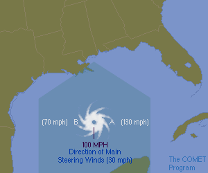
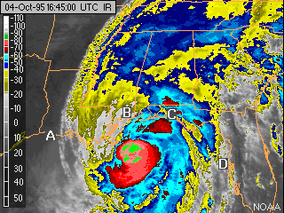

The Right Side of the Storm
As a general rule of thumb, the hurricane's right side (relative to the direction it is traveling) is the most dangerous part of the storm because of the additive effect of the hurricane wind speed and speed of the larger atmospheric flow (the steering winds). The increased winds on the right side increase the storm surge. Tornadoes are also more common on this side.
Looking at the figure to the left, pretend you are standing behind the hurricane with your back to the steering flow. In this case, the right side is the eastern section of the hurricane. (If it were traveling east to west, the right side would be the north section.) The winds around the hurricane's eye are moving in a counterclockwise fashion.
At Point A, the hurricane winds are nearly in line with the steering wind, adding to the strength of the winds. For example, if the steering currents are 30 mph and the average hurricane winds are 100 mph, the wind speed would be 130 mph at Point A. On the other hand, the winds at Point B are moving opposite those of the steering wind and therefore slow to 70 mph (100 - 30 mph). Incidentally, NHC forecasts take this effect into account in their official wind estimates.
Surface winds around a hurricane rotate counterclockwise and inward. The winds contribute to forming the mound of water that eventually becomes a hurricane's storm surge.

Look at the image on the right. Which location will experience a greater storm surge?
1. Location A
2. Location B
3. Location C
4. Location D